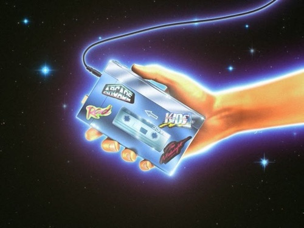

Cool Sites for Real Music Discovery
From vinyl to streaming to whatever TikTok is doing to our brains, every shift in technology has reshaped how we find and experience music. The tools evolve constantly, and so do the ways we stumble across new songs.
Lately, though, discovery has felt frustratingly impersonal. Spotify playlists cycle the same five tracks, YouTube pushes sped-up remixes of songs you've already searched, and TikTok floods us with snippets engineered solely for viral moments.
This is my curation work. The piece went viral — 22k likes, 337 comments, 3,676 restacks — and turned the newsletter into a brand.
Read on Substack